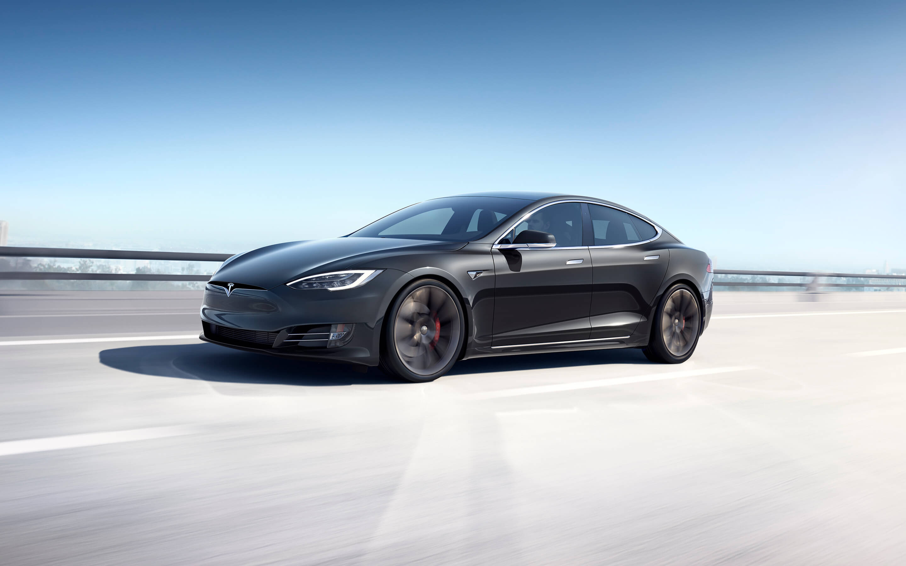

Companies
Zip2 Corporation

Zip2 Corporation
Musk launched his first company, Zip2 Corporation, in 1995 with his brother, Kimbal Musk. An online city guide, Zip2 was soon providing content for the new websites of both The New York Times and the Chicago Tribune. In 1999, a division of Compaq Computer Corporation bought Zip2 for $307 million in cash and $34 million in stock options.
Paypal

In 1999, Elon and Kimbal Musk used the money from their sale of Zip2 to found X.com, an online financial services/payments company. An X.com acquisition the following year led to the creation of PayPal as it is known today.
In October 2002, Musk earned his first billion when PayPal was acquired by eBay for $1.5 billion in stock. Before the sale, Musk owned 11 percent of PayPal stock.
SpaceX
Musk founded his third company, Space Exploration Technologies Corporation, or SpaceX, in 2002 with the intention of building spacecraft for commercial space travel. By 2008, SpaceX was well established, and NASA awarded the company the contract to handle cargo transport for the International Space Station—with plans for astronaut transport in the future—in a move to replace NASA’s own space shuttle missions.
Tesla Motors

Musk is the co-founder, CEO and product architect at Tesla Motors, a company formed in 2003 that is dedicated to producing affordable, mass-market electric cars as well as battery products and solar roofs. Musk oversees all product development, engineering and design of the company's products.
Five years after its formation, in March 2008, Tesla unveiled the Roadster, a sports car capable of accelerating from 0 to 60 mph in 3.7 seconds, as well as traveling nearly 250 miles between charges of its lithium ion battery.
In August 2008, Tesla announced plans for its Model S, the company's first electric sedan that was reportedly meant to take on the BMW 5 series. In 2012, the Model S finally entered production at a starting price of $58,570. Capable of covering 265 miles between charges, it was honored as the 2013 Car of the Year by Motor Trend magazine.
In November 2017, Musk made another splash with the unveiling of the new Tesla Semi and Roadster at the company's design studio. The semi-truck, which was expected to enter into production in 2019 before being delayed, boasts 500 miles of range as well as a battery and motors built to last 1 million miles.
The Model 3 was officially launched in March 2019 following extensive production delays. The car was initially priced at $35,000, a much more accessible price point than the $69,500 and up for its Model S and X electric sedans.
In March 2019, Musk unveiled Tesla’s long-awaited Model Y. The compact crossover, which began arriving for customers in March 2020, has a driving range of 300 miles and a 0 to 60 mph time of 3.5 seconds.
SolarCity
In August 2016, in Musk’s continuing effort to promote and advance sustainable energy and products for a wider consumer base, a $2.6 billion dollar deal was solidified to combine his electric car and solar energy companies. His Tesla Motors Inc. announced an all-stock deal purchase of SolarCity Corp., a company Musk had helped his cousins start in 2006. He is a majority shareholder in each entity.
“Solar and storage are at their best when they're combined. As one company, Tesla (storage) and SolarCity (solar) can create fully integrated residential, commercial and grid-scale products that improve the way that energy is generated, stored and consumed,” read a statement on Tesla’s website about the deal.
The Boring Company
In January 2017, Musk launched The Boring Company, a company devoted to boring and building tunnels in order to reduce street traffic. He began with a test dig on the SpaceX property in Los Angeles.
In late October of that year, Musk posted the first photo of his company's progress to his Instagram page. He said the 500-foot tunnel, which would generally run parallel to Interstate 405, would reach a length of two miles in approximately four months.
In May 2019 the company, now known as TBC, landed a $48.7 million contract from the Las Vegas Convention and Visitors Authority to build an underground Loop system to shuttle people around the Las Vegas Convention Center.